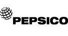
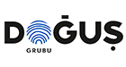

Markalar ve müşteriler
Referanslar
Dünyanın önde gelen markaları için çalışıyoruz.
01Markalar
Birlikte çalıştığımız markalar.
Büyük ölçekli projeleri de küçük ve detaylı işleri de aynı özenle yürüten bir yapıya sahibiz.
4,7Google puanı
13 değerlendirme
 Mercedes-Benz
Mercedes-Benz Artell Forum
Artell Forum
PepsiCo Multi Turk Mall
Multi Turk Mall MV Holding
MV Holding Adidas
Adidas
Doğuş Grubu Citi
Citi Mazda
Mazda Altınbaş Holding
Altınbaş Holding Mercedes-AMG
Mercedes-AMG Nissan
Nissan Soyak
Soyak Unilever
Unilever Borusan
Borusan
02Müşteri dizini
Markaya göre çalışmalar.
Mercedes-Benz
Ofis · Showroom- Mercedes-Benz IT Merkezi
- Mercedes-Benz Premium Showroomlar
- Mercedes-Benz Vadi İstanbul
- Mercedes-Benz Etiler
- Mercedes-Benz Maslak
- Mercedes-Benz Otobüs Teslim Salonu
- Mercedes-Benz Otoport
- 01çalışma
Adidas
Ofis - 01çalışma
Artell
Ofis - 01çalışma
Borusan
Showroom - 01çalışma
Emaar
Showroom - 01çalışma
Garden Planet
Ticari - 01çalışma
Mazda
Ofis - 01çalışma
Mercedes-AMG
Showroom - 01çalışma
Nissan
Showroom - 01çalışma
Passage
Ticari - 01çalışma
PepsiCo
Ofis - 01çalışma
Recordati
Ofis - 01çalışma
Volkswagen
Showroom


İletişim
Yeni ofisinizi birlikte planlayalım.
Proje türü, yaklaşık alan ve şehir yeterli; gerisini birlikte netleştiririz.